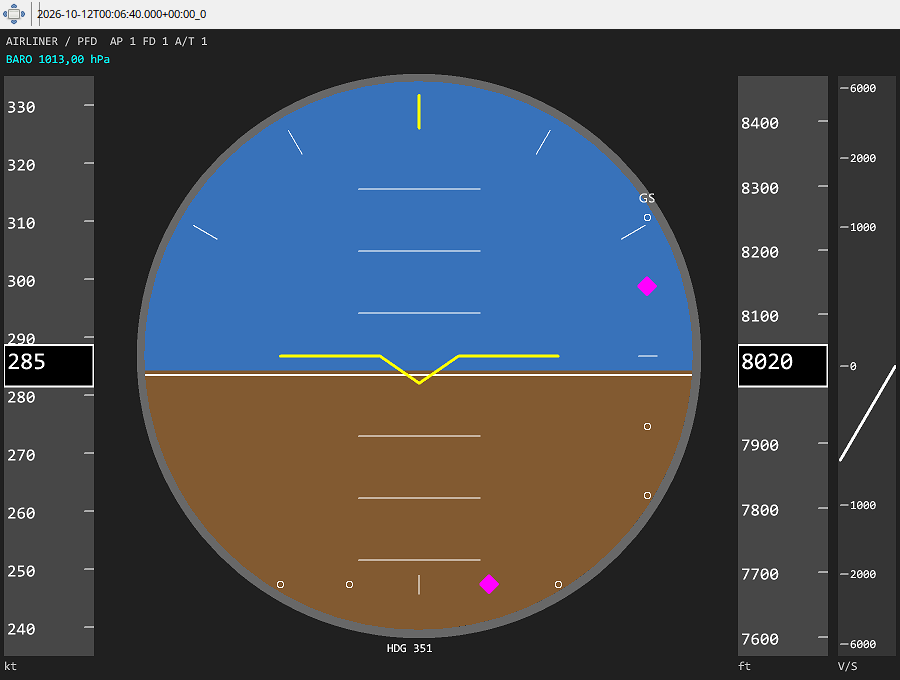

Las cintas IAS y ALT se desplazan alrededor del valor actual; a la derecha aparece V/S con aguja. El rumbo está junto al horizonte. Es una visualización común de telemetría estándar, no una reproducción certificada.
Compare medidas, objetivos AP y estado FD/AP/A/T. Las órdenes FD deben estar disponibles y ser válidas; una barra ausente no equivale a orden cero. Los datos ILS grabados permiten revisar localizador y senda.
